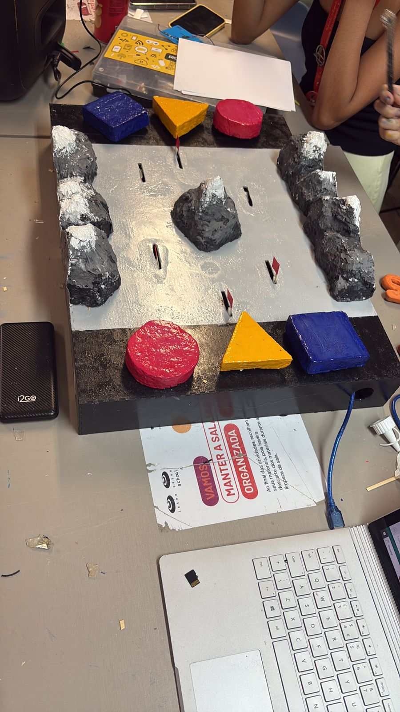

Artefato Desenvolvido na Unidade
Trilha Sonora

Projeto desenvolvido para disciplina de Projeto 1, usando conhecimentos de arduino de SD e programação em C++. O artefato visa possibilitar a interação(principalmente crianças) entre videntes e pessoas com deficiência visual.
Como funciona?
É um jogo de tabuleiro que consiste em uma partida 1v1 onde os 2 jogadores se enfrentam numa série de minigames que guiam-os pelo som, os botões possuem formas geométricas e o tabuleiro em si contém relevos e texturas para aumentar ainda mais a acessibilidade.
Ferramentas Utilizadas
- Arduino IDE
- Servos
- DFP Player mini
- C++
- GitHub